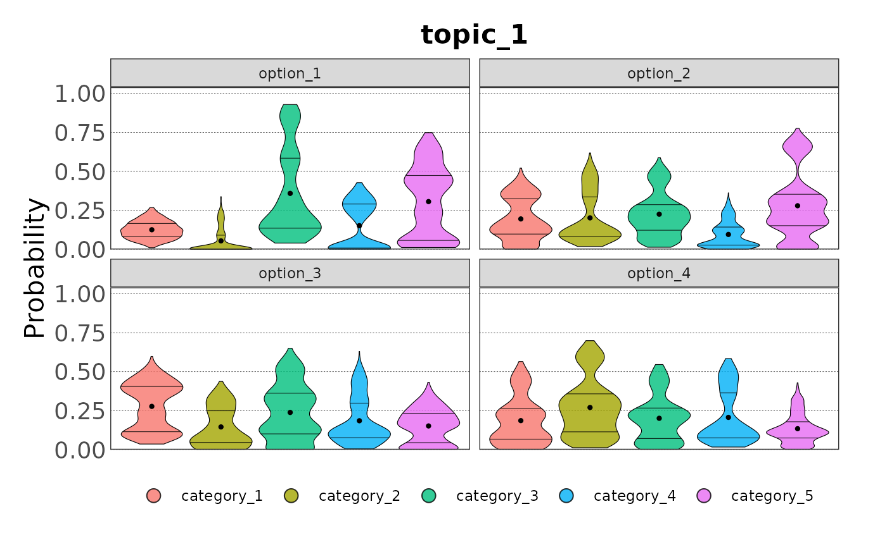
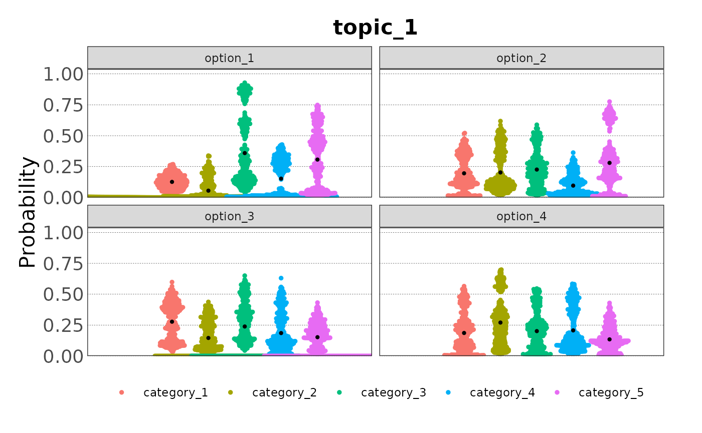
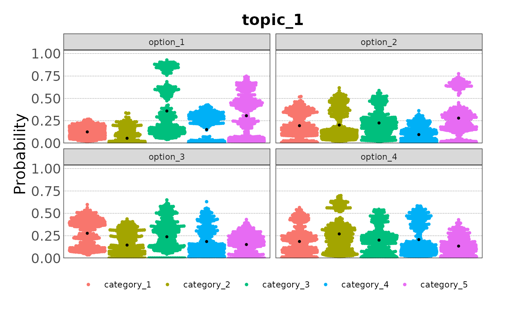
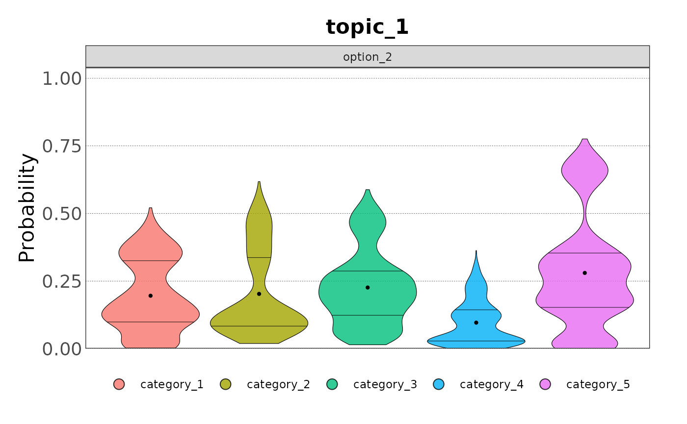

Many of the concepts introduced in
vignette("continuous_variables") are also applicable to
categorical variables, and the name of the functions are the same but
have the prefix cat instead of cont. However,
there are some differences in the workflow for loading and analysing
data collected during the elicitation of categorical variables. This
vignette will guide you through the process of loading and analysing
categorical data.
Datasets
There are three datasets included in the package for demonstration
purposes: ?topic_1, ?topic_2, and
?topic_3:
topic_1
#> # A tibble: 120 × 5
#> name option category confidence estimate
#> <chr> <chr> <chr> <dbl> <dbl>
#> 1 Derek Maclellan option_1 category_1 15 0.08
#> 2 Derek Maclellan option_1 category_2 15 0
#> 3 Derek Maclellan option_1 category_3 15 0.85
#> 4 Derek Maclellan option_1 category_4 15 0.02
#> 5 Derek Maclellan option_1 category_5 15 0.05
#> 6 Derek Maclellan option_2 category_1 35 0.02
#> 7 Derek Maclellan option_2 category_2 35 0.11
#> 8 Derek Maclellan option_2 category_3 35 0.18
#> 9 Derek Maclellan option_2 category_4 35 0.02
#> 10 Derek Maclellan option_2 category_5 35 0.67
#> # ℹ 110 more rows
topic_2
#> # A tibble: 100 × 5
#> name option category confidence estimate
#> <chr> <chr> <chr> <dbl> <dbl>
#> 1 Christopher Felix option_1 category_1 100 0.09
#> 2 Christopher Felix option_1 category_2 100 0.21
#> 3 Christopher Felix option_1 category_3 100 0.11
#> 4 Christopher Felix option_1 category_4 100 0.59
#> 5 Christopher Felix option_1 category_5 100 0
#> 6 Christopher Felix option_2 category_1 20 0.09
#> 7 Christopher Felix option_2 category_2 20 0.05
#> 8 Christopher Felix option_2 category_3 20 0.33
#> 9 Christopher Felix option_2 category_4 20 0.24
#> 10 Christopher Felix option_2 category_5 20 0.29
#> # ℹ 90 more rows
topic_3
#> # A tibble: 90 × 5
#> name option category confidence estimate
#> <chr> <chr> <chr> <dbl> <dbl>
#> 1 Derek Maclellan option_1 category_1 80 0.02
#> 2 Derek Maclellan option_1 category_2 80 0.02
#> 3 Derek Maclellan option_1 category_3 80 0.01
#> 4 Derek Maclellan option_1 category_4 80 0.87
#> 5 Derek Maclellan option_1 category_5 80 0.08
#> 6 Derek Maclellan option_2 category_1 50 0.11
#> 7 Derek Maclellan option_2 category_2 50 0.09
#> 8 Derek Maclellan option_2 category_3 50 0.17
#> 9 Derek Maclellan option_2 category_4 50 0.09
#> 10 Derek Maclellan option_2 category_5 50 0.54
#> # ℹ 80 more rowsIn each dataset the first column contains the name of the expert, the second the options considered and the third the categories of the categorical variable. The fourth column contains the expert’s confidence, and the fifth the expert’s estimate. Expert estimates for each option should represent probabilities or percentages, and should thus sum up to 1 or 100. Both are accepted and data scaled to 1 will be automatically rescaled to 100.
Load data
We start by creating the ?elic_cat object with the
function cat_start(). As for the continuous variables, this
objects stores the metadata of the elicitation process:
my_categories <- c("category_1", "category_2", "category_3",
"category_4", "category_5")
my_options <- c("option_1", "option_2", "option_3", "option_4")
my_topics <- c("topic_1", "topic_2", "topic_3")
my_elicitation <- cat_start(categories = my_categories,
options = my_options,
experts = 6,
topics = my_topics)
#> ✔ <elic_cat> object for "Elicitation" correctly initialised
my_elicitation
#>
#> ── Elicitation ──
#>
#> • Categories: "category_1", "category_2", "category_3", "category_4", and
#> "category_5"
#> • Options: "option_1", "option_2", "option_3", and "option_4"
#> • Number of experts: 6
#> • Topics: "topic_1", "topic_2", and "topic_3"
#> • Data available for 0 topicsThis elicitation process is for a categorical variables with 5 categories estimated for four options and three topics by six experts.
As we did for continuous variables, we can load the data with the
function cat_load():
my_elicitation <- cat_add_data(my_elicitation,
data_source = topic_1,
topic = "topic_1") |>
cat_add_data(data_source = topic_2, topic = "topic_2") |>
cat_add_data(data_source = topic_3, topic = "topic_3")
#> ℹ Estimates sum to 1. Rescaling to 100.
#> ✔ Data added to Topic "topic_1" from "data.frame"
#>
#> ℹ Estimates sum to 1. Rescaling to 100.
#> ✔ Data added to Topic "topic_2" from "data.frame"
#>
#> ℹ Estimates sum to 1. Rescaling to 100.
#> ✔ Data added to Topic "topic_3" from "data.frame"As mentioned before, estimates can also sum up to 100.
topic_1_percent <- dplyr::mutate(topic_1,
estimate = estimate * 100)
my_elicitation <- cat_add_data(my_elicitation,
data_source = topic_1_percent,
topic = "topic_1")
#> ✔ Data added to Topic "topic_1" from "data.frame"Expert anonymisation is automatic but optional. If expert names are
not to be anonymised, the argument anonymise can be set to
FALSE in the cat_add_data() function.
my_elicitation <- cat_add_data(my_elicitation,
data_source = topic_1,
topic = "topic_1",
anonymise = FALSE)
#> ℹ Estimates sum to 1. Rescaling to 100.
#> ✔ Data added to Topic "topic_1" from "data.frame"Again, metadata are used to validate the data. If the data is not consistent with the metadata, an error message will be displayed. For example, if we try to load data with a category not defined in the metadata:
malformed_data <- topic_1
malformed_data[1, 2] <- "category_6"
cat_add_data(my_elicitation,
data_source = malformed_data,
topic = "topic_1")
#> Error in `cat_add_data()`:
#> ! The column with the name of the options contains unexpected values:
#> ✖ The value "category_6" is not valid.
#> ℹ Check the metadata in the <elic_cat> object.Get data
Data can be retrieved from the elic_cat object with the
cat_get_data() function:
cat_get_data(my_elicitation, topic = "topic_1")
#> # A tibble: 120 × 5
#> id option category confidence estimate
#> <chr> <chr> <chr> <dbl> <dbl>
#> 1 Derek Maclellan option_1 category_1 15 8
#> 2 Derek Maclellan option_1 category_2 15 0
#> 3 Derek Maclellan option_1 category_3 15 85
#> 4 Derek Maclellan option_1 category_4 15 2
#> 5 Derek Maclellan option_1 category_5 15 5
#> 6 Derek Maclellan option_2 category_1 35 2
#> 7 Derek Maclellan option_2 category_2 35 11
#> 8 Derek Maclellan option_2 category_3 35 18
#> 9 Derek Maclellan option_2 category_4 35 2
#> 10 Derek Maclellan option_2 category_5 35 67
#> # ℹ 110 more rowsNotice that the name of the expert is not anonymised in this case and
assigned to the column id.
Data can also be retrieved only for given options:
cat_get_data(my_elicitation, topic = "topic_2", option = "option_1")
#> # A tibble: 25 × 5
#> id option category confidence estimate
#> <chr> <chr> <chr> <dbl> <dbl>
#> 1 e51202e option_1 category_1 100 9
#> 2 e51202e option_1 category_2 100 21
#> 3 e51202e option_1 category_3 100 11
#> 4 e51202e option_1 category_4 100 59
#> 5 e51202e option_1 category_5 100 0
#> 6 e78cbf4 option_1 category_1 75 31
#> 7 e78cbf4 option_1 category_2 75 27
#> 8 e78cbf4 option_1 category_3 75 9
#> 9 e78cbf4 option_1 category_4 75 17
#> 10 e78cbf4 option_1 category_5 75 16
#> # ℹ 15 more rowsHere, the data is anonymised, following what was specified when loading the data.
Data analysis
Contrary to continuous variables, there is not yet a function for plotting the raw data. However, we can plot the distribution of the sampled data.
Sample data
Data can be sampled using the function cat_sample() (see
the variable documentation for the explanation of the sampling methods).
Here we sample 100 values for each option:
samp <- cat_sample_data(my_elicitation,
method = "unweighted",
topic = "topic_1",
n_votes = 100)
#> ✔ Data sampled successfully using "unweighted" method.
samp
#> # A tibble: 2,400 × 7
#> id option category_1 category_2 category_3 category_4 category_5
#> <chr> <chr> <dbl> <dbl> <dbl> <dbl> <dbl>
#> 1 Derek Maclellan optio… 0.0476 0 0.864 0.0171 0.0712
#> 2 Derek Maclellan optio… 0.0567 0 0.904 0.00235 0.0374
#> 3 Derek Maclellan optio… 0.0661 0 0.869 0.0268 0.0377
#> 4 Derek Maclellan optio… 0.0648 0 0.882 0.00612 0.0467
#> 5 Derek Maclellan optio… 0.0376 0 0.929 0.0101 0.0236
#> 6 Derek Maclellan optio… 0.0925 0 0.851 0.0102 0.0463
#> 7 Derek Maclellan optio… 0.0717 0 0.877 0.0144 0.0370
#> 8 Derek Maclellan optio… 0.0779 0 0.875 0.0125 0.0348
#> 9 Derek Maclellan optio… 0.118 0 0.769 0.0674 0.0457
#> 10 Derek Maclellan optio… 0.0904 0 0.844 0.000713 0.0650
#> # ℹ 2,390 more rowsSampled data can be summarised for any option:
summary(samp, option = "option_1")
#> # A tibble: 5 × 7
#> Category Min Q1 Median Mean Q3 Max
#> <chr> <dbl> <dbl> <dbl> <dbl> <dbl> <dbl>
#> 1 category_1 0.0109 0.0832 0.122 0.126 0.166 0.269
#> 2 category_2 0 0.00208 0.00969 0.0551 0.0915 0.338
#> 3 category_3 0.0411 0.136 0.238 0.359 0.585 0.929
#> 4 category_4 0.000152 0.00925 0.111 0.153 0.291 0.428
#> 5 category_5 0.0123 0.0579 0.308 0.307 0.474 0.748And plotted as violin plot:
plot(samp)
Or as beeswarm plot, which can be adapted as needed:
plot(samp, type = "beeswarm")
plot(samp, type = "beeswarm",
beeswarm_cex = 0.9, beeswarm_corral = "wrap")
We can also plot the distribution for a specific option:
plot(samp, option = "option_2")